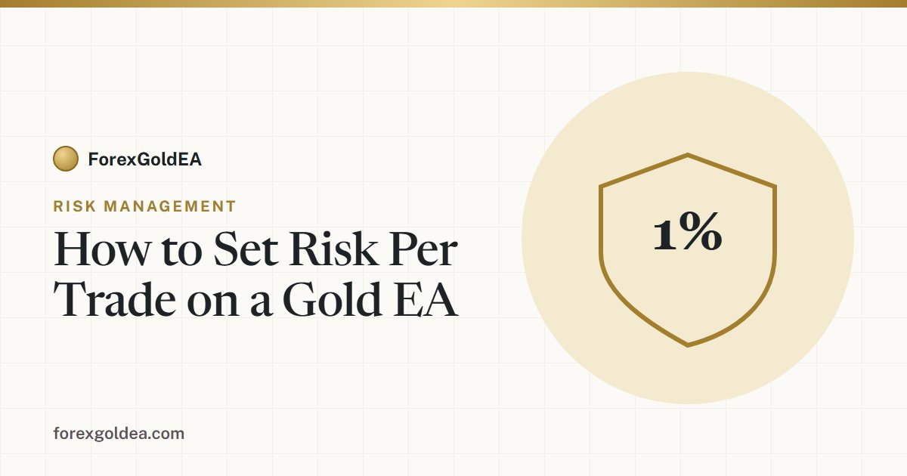

How to Set Risk Per Trade on a Gold EA

Almost every blown gold account has the same cause — not a bad strategy, but too much risk on each trade. Get this one setting right and an average EA can survive; get it wrong and even a great EA will eventually wipe the account. Here is exactly how to set risk per trade on XAU/USD, in plain numbers.
The rule: 1–2% per trade
The single most important number in your whole setup is how many dollars you're willing to lose on one trade. The widely used standard is 1–2% of the account balance. On a $1,000 account that's just $10–$20 per trade.
Why so small? Because losing streaks are normal, not exceptional. Even a strategy that wins more often than it loses will hit four or five losers in a row eventually. The table below shows why the percentage you pick is a survival decision, not a growth decision:
| Risk per trade | Loss after 5 losers in a row | What it does to you |
|---|---|---|
| 1% | ~5% of account | Barely noticeable — the EA keeps working. |
| 2% | ~10% of account | Uncomfortable but fully survivable. |
| 5% | ~23% of account | Painful — recovery gets hard. |
| 10% | ~41% of account | Account and discipline both break. |
The key idea: lowering risk per trade barely slows your growth, but it dramatically increases how many losses in a row you can survive. Slow and survivable beats fast and fragile — every time.
Turning "1%" into an actual lot size
A percentage means nothing until it becomes a lot size the EA can trade. On XAU/USD it's three quick steps:
- Risk % → dollars. 1% of a $1,000 account = $10.
- Measure the stop-loss in dollars. Not pips — the actual price distance. Entry $2,400, stop $2,395 = a $5.00 distance.
- Apply the formula. $10 ÷ ($5 × 100) = 0.02 lots.
Check it: 0.02 lots is 2 ounces, so a $5 move against you is 2 × $5 = $10 — exactly the 1% you set. Prefer not to do the math each time? Our gold risk calculator gives the dollar risk instantly, and the lot size calculator turns it straight into the correct trade size. The full walk-through is in our lot size guide.
Worked examples
| Account | Risk | Stop distance | Lot size |
|---|---|---|---|
| $500 | 1% = $5 | $5.00 | 0.01 |
| $1,000 | 1% = $10 | $5.00 | 0.02 |
| $2,000 | 2% = $40 | $8.00 | 0.05 |
Notice the pattern: as the stop gets wider, the lot size gets smaller to keep the same dollar risk. That's the whole point — the risk stays constant even when the setup changes.
Beyond per-trade: two more limits that matter
Risk per trade controls a single loss. Two more settings control a bad run of losses:
- Daily loss limit. A cap (say 4–6%) that pauses the EA after a bad day, so one ugly session can't spiral.
- Maximum drawdown ceiling. A hard stop (say 15–20%) that shuts the EA down entirely — the circuit breaker between a bad month and a blown account.
Together these three — per-trade risk, daily limit, drawdown ceiling — are what "risk management" actually means in practice. For how account size affects all of this, see how much money you need to run a gold EA.
Common mistakes
- Using a fixed lot forever. 0.10 lots that suited $5,000 is reckless on $800 after a drawdown. Risk should scale with the balance.
- Risking to "make it back." Doubling risk after a loss is how accounts die fastest.
- Ignoring the stop distance. A wider stop needs a smaller lot — same risk, different size.
- Confusing risk with leverage. Leverage sets margin, not your loss. Risk comes from lot size × stop distance.
How ForexGoldEA handles it
If your EA has a risk-percent setting, it runs this exact calculation on every single trade — reading the current balance, measuring the stop the strategy chose, and sizing so your loss matches the percentage you set. You set it once (say 1%) and never think in lots again. That's the real advantage of automation: the machine enforces the discipline that humans abandon after two losses.
Want your risk set correctly, automatically?
Use our free gold risk calculator to see the numbers, or get ForexGoldEA and set risk as a percentage — it sizes every trade for you.
Open the Risk Calculator Talk to us on Telegram →Frequently asked questions
How much should I risk per trade on a gold EA?
1–2% of the balance per trade. On $1,000 that's $10–$20. Small risk is what survives the losing streaks every strategy eventually has.
What is the 1% rule?
Never risk more than 1% of the account on a single trade, so any one loss costs just 1% of the balance. It's the foundation of surviving a losing run.
How do I turn a risk percentage into a lot size?
Risk % → dollars, divide by the stop distance in dollars, divide by 100 (gold contract size). $10 risk with a $5 stop = 0.02 lots.
Should I risk more to grow faster?
No. Higher risk speeds up losing streaks far more than growth. At 10% risk, five losses halve the account.
Does the EA set risk automatically?
If it has a risk-percent setting, yes — it sizes every trade to match your chosen percentage. A fixed lot does not adapt.
Risk disclosure: Trading foreign exchange and CFDs on margin, including gold (XAU/USD), carries a high level of risk and may not be suitable for every investor. You can lose some or all of your capital. Figures here are illustrative examples using a 100-ounce standard contract — confirm your broker's contract specification. Correct risk sizing controls the size of a loss; it does not prevent losses. ForexGoldEA is a trading tool, not financial advice.